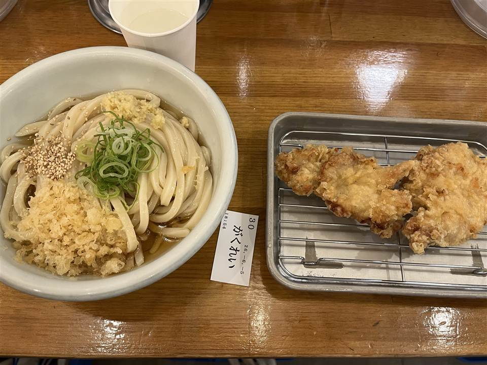
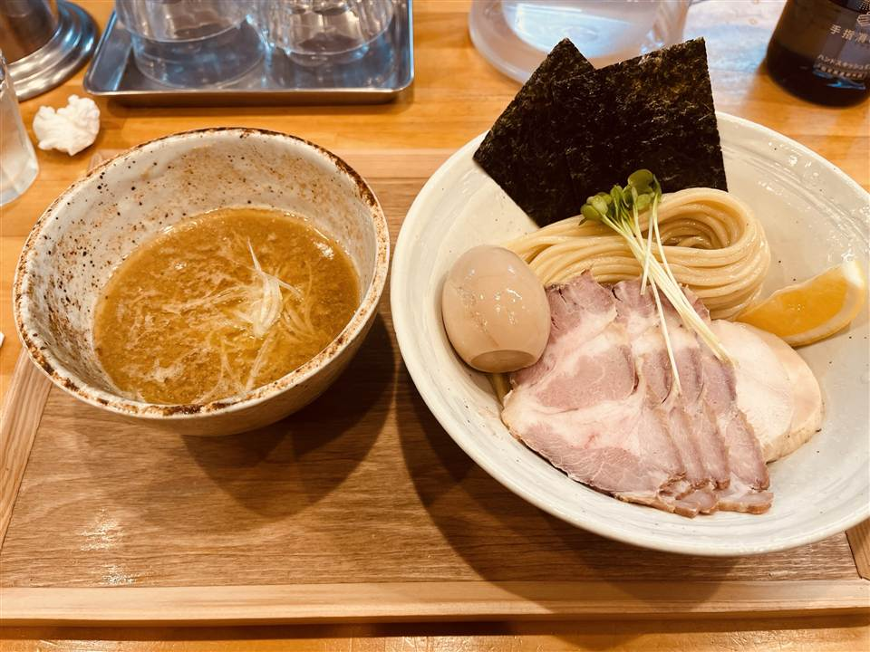
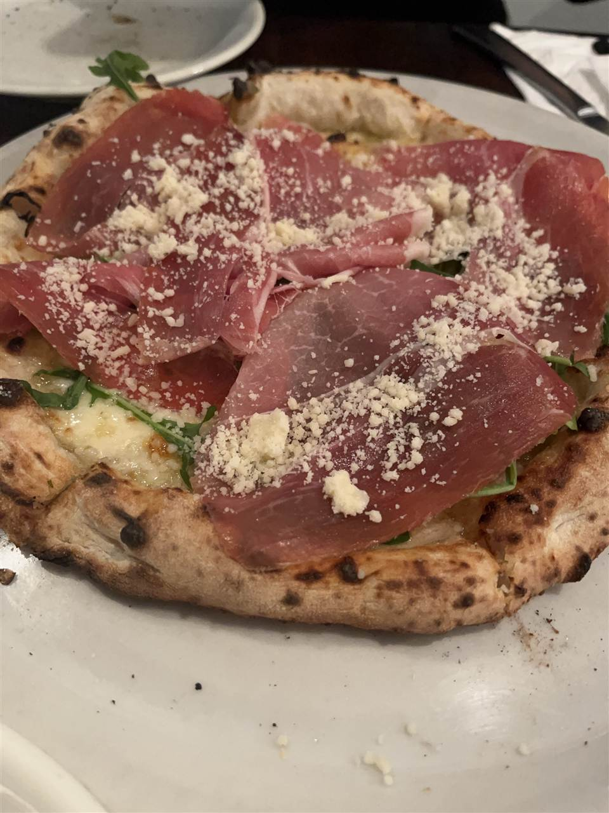
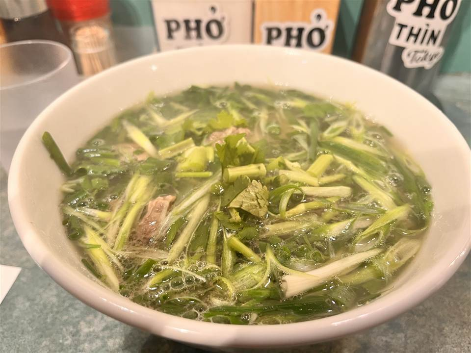
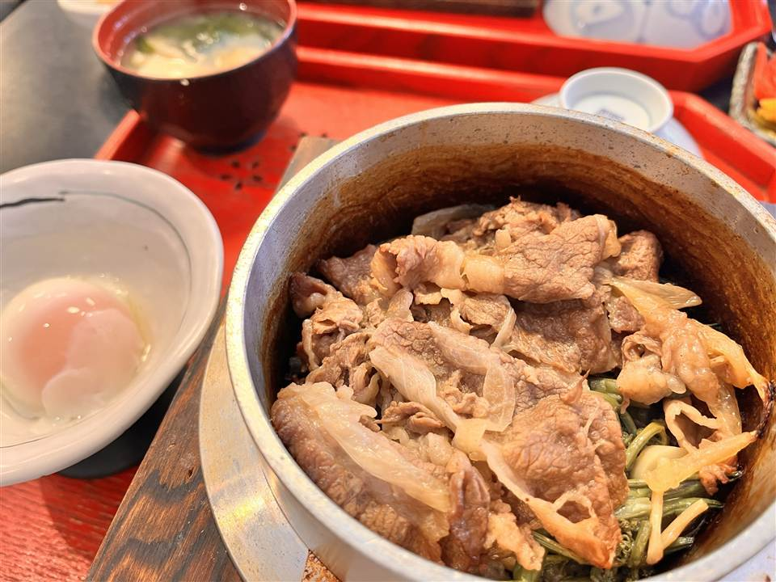

SEPTEMBER 2026 09月号
食通の友人が厳選する8軒

飯田橋・うどん
トウキョウサンフラワーイイダバシ
立ち食いの讃岐うどん屋。2020年11月の開店で、いりこの出汁に、揚げたてを並べた天ぷらから好きなものを自分でのせる。鶏天やちくわ天のほかに季節のものが出ることもあり、その日に何が揚がっているかで一杯の顔が変わる。
「麺がレベチ。安いのに麺がモチモチ。」
お店の詳細
| 住所 | 東京都千代田区富士見町2-2-7 |
|---|---|
| 開店 | 2020年11月 |
| 看板 | 讃岐うどん（立ち食い） |
| こだわり | いりこの出汁。天ぷらは常に揚げたてを並べ、鶏天やちくわ天のほか季節のものも出す |

池袋・つけ麺
MENYA NAKAGAWA
2022年10月に池袋の西口に開いた店。地鶏のスープが柱で、つけ汁を残しておくと〆にチーズリゾットを頼める。チャーシューは自家製、鶏つくねは手ごね。地鶏だけで取ったらぁ麺も別に出している。
「魚介であっさりしてて食べやすいのに、肉とかボリュームあって食べ応えある」
お店の詳細
| 住所 | 東京都豊島区池袋2-38-7 加藤ビル1F |
|---|---|
| 開店 | 2022年10月10日 |
| 看板 | 鶏魚介つけ麺 |
| こだわり | 地鶏のスープ。自家製のチャーシューと手ごねの鶏つくね。地鶏だけで取ったらぁ麺もある |

池袋・ピザ
PIZZA BORSA
小麦・水・塩・酵母だけで仕込んだ生地を24時間寝かせ、500℃の薪窯で1分ほど焼く。窯と職人の手元は、どの席からも見える。2014年7月の開店。
「ピザの生地が薄いけど、具材がのってるなら食べ応えある」
お店の詳細
| 住所 | 東京都豊島区西池袋3-30-8 渡辺ビル1F |
|---|---|
| 開店 | 2014年7月2日 |
| 看板 | ナポリピッツァ |
| こだわり | 生地は小麦・水・塩・酵母の4つだけ。毎日仕込んで24時間寝かせ、500℃の薪窯で約1分焼く |

池袋・ベトナム料理
フォーティントーキョー
1955年にハノイのロードゥック通りで始まった店の、日本での1号店。2019年3月に池袋へ来た。品書きは牛肉のフォー一種類だけ。牛肉を炒めてから丼に入れるのは本店から続くやり方で、券売機で食券を買うと数分で出てくる。
「フォーだと思って舐めてたけど、スープは牛肉の旨みがでてて、卓上調味料も多くて楽しい」
お店の詳細
| 住所 | 東京都豊島区東池袋1-12-14 ハヤカワビルB1F |
|---|---|
| 開店 | 2019年3月（ハノイの本店は1955年） |
| 看板 | 牛肉のフォー（品書きはこれ一種類） |
| 系譜 | ハノイ・ロードゥック通りの「Phở Thìn」の海外1号店 |
| 行き方 | 池袋駅35番出口から徒歩2分ほど |

草津・そば／釜飯
いいやま亭
草津でただ一軒の釜めし専門店。注文を受けてから草津の水で米を研ぎ、ひと釜ずつ炊く。上州牛や五目など20種類以上あり、釜めしが終わり次第その日は閉める。炊き上がりを待つ時間が要るので、湯畑のついでに寄るなら早い時間がいい。
「ご飯に出汁がしみてて美味しい釜飯」
お店の詳細
| 住所 | 群馬県吾妻郡草津町386-2 |
|---|---|
| 看板 | 上州牛釜めし・五目釜めし（20種類以上） |
| こだわり | 注文を受けてから草津の水で米を研ぎ、ひと釜ずつ炊く |
| 行き方 | 釜めしが終わり次第その日は閉める。駐車場は無い |
西日暮里・ラーメン
らーめん いっとく
看板は「徳そば」。鶏白湯に煮干し・鰹・鯖を合わせた一杯で、担々麺や徳つけめんも出す。餃子は3個から頼めるので、一杯に一皿を足しても重くならない。道灌山通りと不忍通りが交わるところにある。
「魚介で味が濃くて美味しい」
お店の詳細
| 住所 | 東京都文京区千駄木3-49-10 |
|---|---|
| 看板 | 徳そば |
| こだわり | 鶏白湯に煮干し・鰹・鯖を合わせる。担々麺、徳つけめんもある |
| 行き方 | 道灌山通りと不忍通りの交差点。西日暮里駅から徒歩7分ほど |
渋谷・カレー
Spice Theater Shibuya AXSH
札幌の小さな倉庫で始めた「Warehouse Curry」が元になり、2024年の渋谷アクシュの開業に合わせて出した店。インドとネパールの料理人が、日本の出汁と中華の技法を混ぜて作る。ご飯はターメリックライスとバスマティライスから選べ、タンドールで焼いた料理と樽生のクラフトビールも置く。
「カレーが辛いけど、味に個性があり食べ比べるのも楽しかった。駅から近くて行きやすい」
お店の詳細
| 住所 | 東京都渋谷区渋谷2-17-1 渋谷アクシュ1F |
|---|---|
| 開店 | 2024年（渋谷アクシュの開業に合わせて） |
| 系譜 | 札幌の小さな倉庫で始めた「Warehouse Curry」から |
| こだわり | インドとネパールの料理人が、日本の出汁と中華の技法を合わせる。タンドールで焼く料理と樽生のクラフトビール6種 |
| 行き方 | 渋谷駅から徒歩3分ほど |
亀戸・ピザ
リンシエメ
青山の「ナプレ」で修業した店主が2016年に開いた店。イタリアで開かれるピッツァの世界選手権で入賞している。ピッツァ専用のイタリア産小麦を使い、具をのせても生地が負けない。亀戸の下町にあって、日曜と月曜は休み。
「グラタンみたいな厚いピザ」
お店の詳細
| 住所 | 東京都江東区亀戸1-31-7 |
|---|---|
| 開店 | 2016年 |
| 系譜 | 青山「ナプレ」で修業した店主が独立して開いた |
| こだわり | ピッツァ専用のイタリア産小麦を使う。店主はイタリアのピッツァ世界選手権で入賞している |